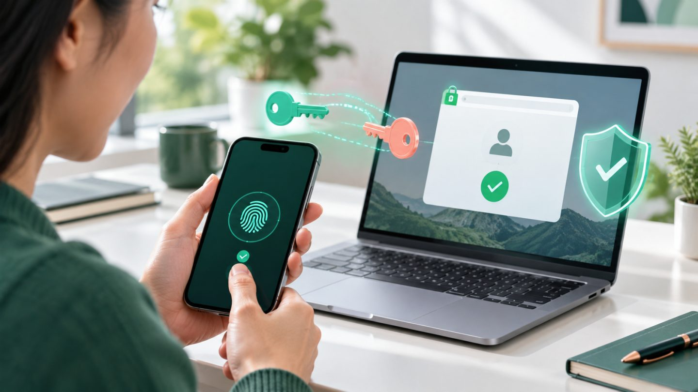

What Is a Passkey? The Future of Passwordless Sign-In
Passwords are difficult to remember, easy to reuse, and frequently stolen through phishing. Passkeys replace the shared secret with cryptographic credentials that are tied to the legitimate website or application.
What is a passkey?
A passkey is a credential based on public-key cryptography and standards such as FIDO2 and WebAuthn. The service stores a public key. The user's device protects the corresponding private key and uses it to sign a challenge during login.
The private key is not sent to the service. The user approves access with the device's screen lock, fingerprint, face recognition, or security key.
Why are passkeys more resistant to phishing?
A passkey is scoped to the correct relying party. A fake website on a different domain cannot ask the authenticator to create a valid signature for the real service. There is also no password for a user to reveal or for an attacker to replay.
What experience do passkeys provide?
- No password to create or remember.
- Fast approval using a familiar device unlock gesture.
- Support for synchronized passkeys or device-bound credentials.
- Cross-device sign-in through secure proximity flows when supported.
Do passkeys eliminate every risk?
No. Organizations still need secure account recovery, session protection, device management, monitoring, and defenses against social engineering. A poorly designed fallback that resets the account with weak identity checks can undermine strong primary authentication.
How should an organization deploy passkeys?
- Offer passkeys alongside the existing login method during transition.
- Allow users to register more than one authenticator.
- Design recovery before encouraging password removal.
- Explain device loss and synchronization in plain language.
- Protect credential registration and removal with reauthentication.
- Monitor adoption, login success, recovery requests, and fraud signals.
Will passkeys replace passwords completely?
Passkeys can become the primary sign-in method for many consumer and workforce applications. Passwords will remain during a long transition because devices, platforms, policies, and user readiness vary. A gradual rollout with strong recovery is usually safer than an abrupt migration.